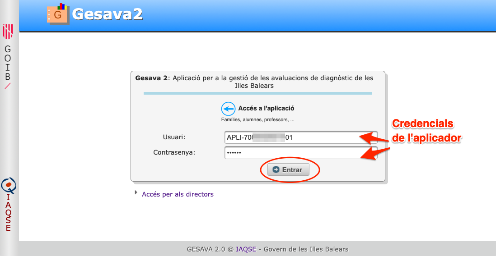
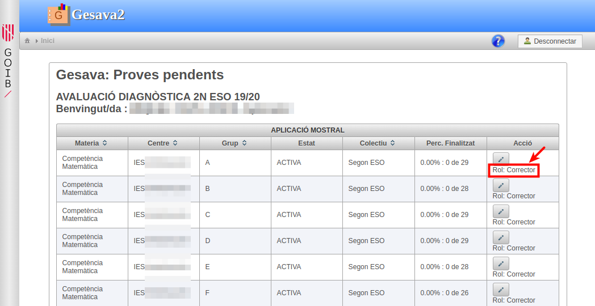
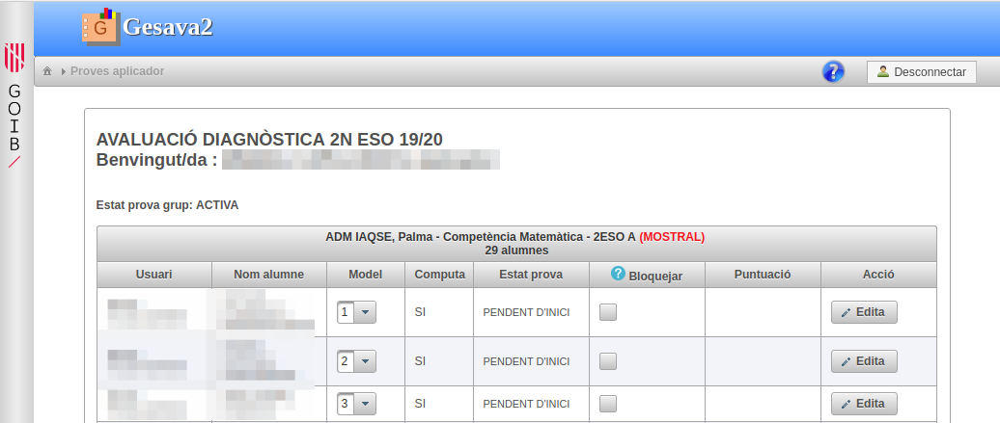
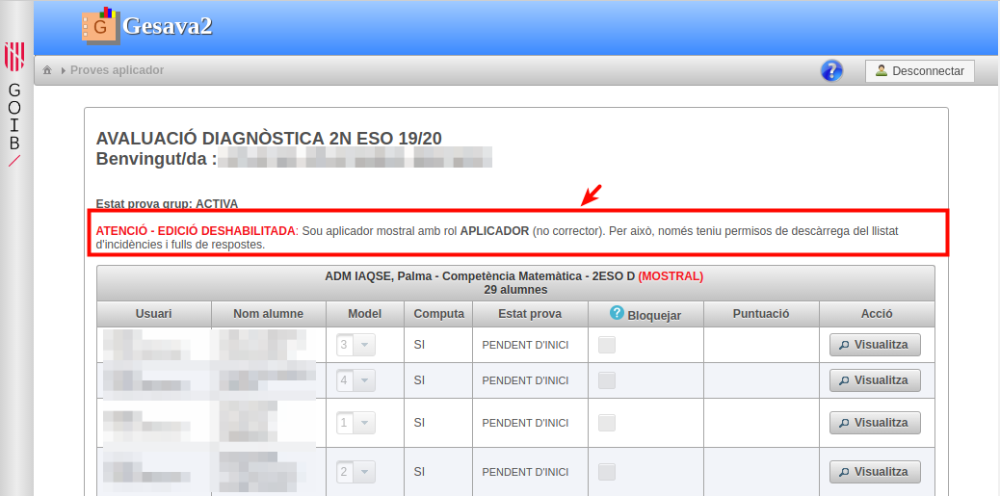
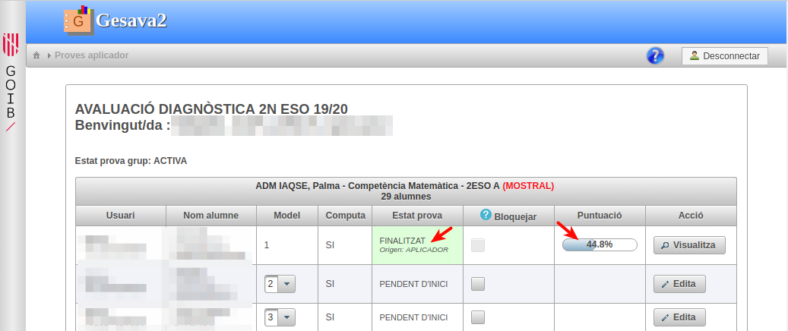
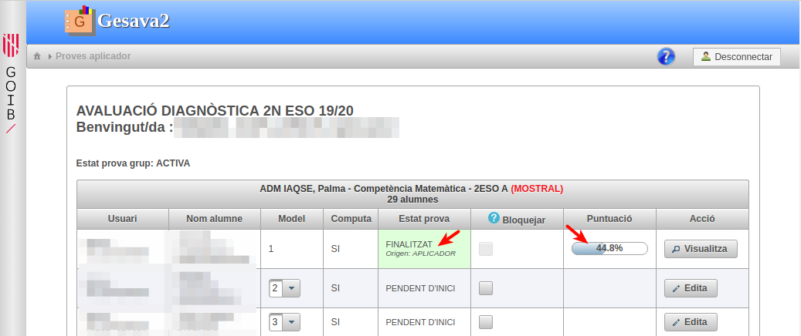

Gesava2 Aplicadors mostrals
Gesava2 - Aplicadors mostrals
Índex de continguts
1. Introducció
Els aplicadors mostrals actuen sota la supervisió de l'IAQSE i s'encarreguen d'aplicar i/o corregir les proves diagnòstiques a certs grups/matèria d'aquells centres que participen en la mostra d'aquell any.
Un aplicador mostral pot tenir assignat un o dos d'aquests rols
- Rol d'aplicador de prova
- Rol de corrector de prova
Un aplicador amb rol d'aplicador de prova podrà descarregar els fulls d'incidències i de respostes. Un aplicador amb rol de corrector, a més a més, podrà introduir les respostes de les proves.
2. Accés a l'aplicació
Per accedir a l'aplicació seguiu les següents passes:
-
Cliqueu sobre la imatge "Accés GESAVA"
 de la part superior dreta d'aquesta pantalla.
de la part superior dreta d'aquesta pantalla. Us apareixerà la pàgina d'accés a l'aplicació en la qual heu d'introduir l'usuari i contrasenya que us ha proporcionat l'IAQSE. El vostre usuari comença amb les lletres APLI-. Aneu en compte d'escriure exactament els camps, respectant majúscules minúscules i sense deixar espais en blanc.
-
Una vegada validats, us apareixerà la pantalla d'inici d'aplicador mostral on trobareu una taula que conté tots els grups / matèria dels centres que teniu assignats.
 Molt Important! Recordeu a tancar la sessió pitjant sobre el botó "Desconnectar" quan hagueu acabat.
3. Descarregar fulls d'incidències i respostes
El dia de la prova de cada matèria avaluable, la persona encarregada d'aplicar la prova necessitarà tenir impresos els fulls de respostes, on els alumnes escriuran les respostes de les preguntes, i els fulls d'incidències allà on l'aplicador de la prova podrà escriure comentaris de seguiment.
Anau a la pàgina inicial de l'aplicador i seleccioneu els grups/matèria que necessiteu. Per exemple, clicam sobre la matèria "Competència Matemàtica" del grup A. En la part inferior de la pantalla del grup, trobam els botons "Llistat d'incidències" i "Baixar fulls de respostes". Pel cas de la competència matemàtica, els fulls de respostes estan disponibles en dos idiomes.

Els fulls de resposta s'han d'imprimir i s'aconsella fer-ho a doble cara. És recomanable que a l'hora d'imprimir seleccioneu l'opció "Ajusta" per evitar que pugui quedar contingut fora dels marges de la pàgina

4. Introduir respostes d'una prova diagnòstica
-
Des de la pàgina inicial de l'aplicador, trieu el grup/matèria que us interessi, per exemple, "Competència matemàtica" i accediu a ell.
Si no teniu el rol d'aplicador corrector, us apareixerà un missatge que us informa que no podeu editar. Això significa que hi teniu accés però només podreu fer consultes.
 -
A la columna model apareix el numero de model assignat a cada alumne. Comproveu que no hi ha hagut cap canvi en el grup i, en cas que n'hi hagi, modificau el número de model mitjançant el menú desplegable.
Cliqueu sobre el botó
 del primer
alumne del grup.
del primer
alumne del grup.
Una vegada s'ha carregat la pàgina, si la prova admet més d'un idioma, com per exemple la competència matemàtica, caldrà que introduïu l'idioma en què s'ha fet la prova per poder continuar.

-
Una vegada s'han carregat les preguntes, veureu que la primera està activa i apareix remarcada amb un fons blau.
Hi ha preguntes obertes i tancades. El menú de les obertes estan remarcades amb color salmó i admeten les opcions X, 0, 1, ···. Les tancades admeten opcions X, A, B, C, ···.
Basta que pitgeu la tecla de l'opció contestada A, B, ···, 0, 1, ··· o X si l'alumne ha deixat la pregunta en blanc. Veureu com, una vegada pitjada la tecla, la pregunta activa passa automàticament a la següent. Aquesta és la forma més ràpida per introduir respostes però, si voleu, també podeu anar triant les opcions de cada menú desplegable.

És molt important que al final del qüestionari no hagi cap pregunta "en blanc" o sense opció introduïda, sinó el programa no us deixarà desar.
Quan hagueu emplenat la resposta de la darrera pregunta del qüestionari, heu de pitjar el botó "Desar i finalitzar". Recordau que una vegada finalitzat, no es permet fer més canvis a la prova.

Us apareixerà un diàleg de confirmació en el qual heu de pitjar el botó "Desar i finalitzar" o la tecla INTRO.

Si tot ha anat bé, a la part superior dreta de la pantalla veureu un missatge de confirmació

Podeu anar de forma ràpida a l'alumne següent de la llista pitjant sobre el botó
 .
Si pitjau el botó "Sortir", tornareu al llistat del grup i podreu comprovam com l'estat de la
prova ha passat a finalitzat. Es podran consultar aquelles proves que
tinguin "Origen: APLICADOR" però no se'n permetrà fer més canvis.

.
Si pitjau el botó "Sortir", tornareu al llistat del grup i podreu comprovam com l'estat de la
prova ha passat a finalitzat. Es podran consultar aquelles proves que
tinguin "Origen: APLICADOR" però no se'n permetrà fer més canvis.
- Si algun alumne el grup no ha fet la prova, marcau la columna "Bloquejar".
- Quan tots els alumnes del grup tinguin les respostes introduïdes o hagin estat bloquejats, el grup passarà a prova/grup "TANCADA".